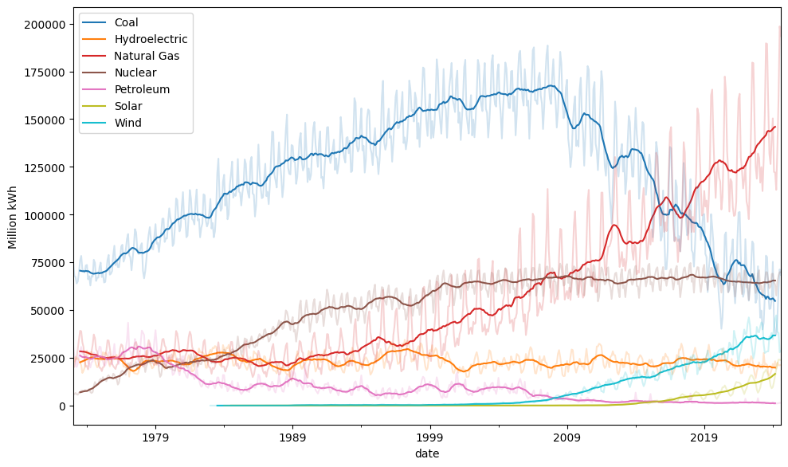
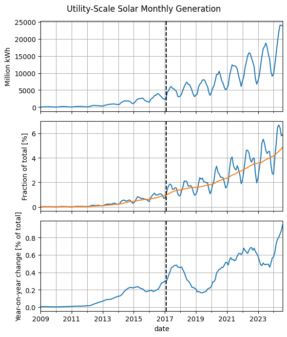
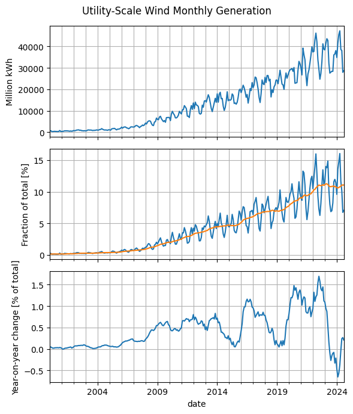
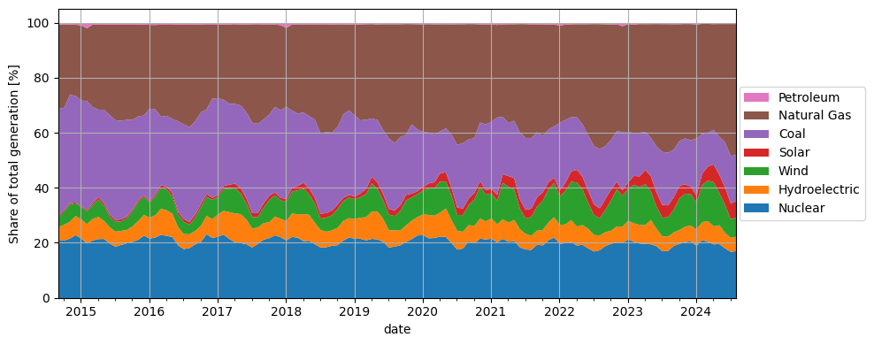
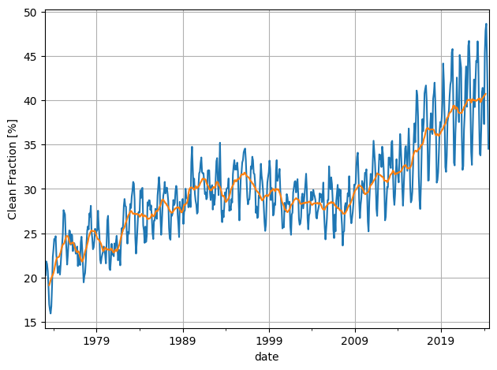
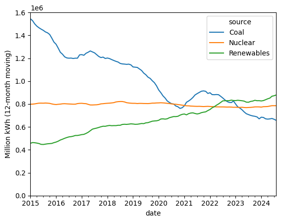
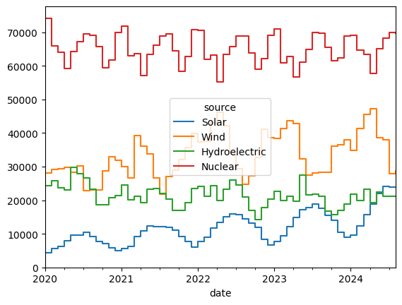

Climate Report#
Additional time series data about climate change come in all the time. Here are some plots that I like to track.
I think that what is essential for this problem is a global consciousness,
a view that transcends our exclusive identifications with the generational
and political groupings into which by accident we have been born.
The solution to these problems requires a perspective that embraces the
planet and the future, because we are all in this greenhouse together.
Carl Sagan, https://youtu.be/Wp-WiNXH6hI?t=985
EIA Monthly: Electric Power Sector#
Show code cell source
import pandas as pd
import numpy as np
import matplotlib.pyplot as plt
url = 'https://www.eia.gov/totalenergy/data/browser/csv.php?tbl=T07.02B'
df = pd.read_csv(url)
df = df.loc[~df['Description'].str.contains('Generation Total')]
df = df.loc[~df['YYYYMM'].astype(str).str.endswith('13')]
df['source'] = df['Description'].str.split(",").str[0].str.replace('Electricity Net Generation From ', '')
df['date'] = pd.to_datetime(df['YYYYMM'], format='%Y%m')
df2 = df.pivot(index='date', columns='source', values='Value')
df2 = df2.rename(columns={'Conventional Hydroelectric Power': 'Hydroelectric',
'Nuclear Electric Power': 'Nuclear'})
df2 = df2.replace('Not Available', np.nan).replace('Not Meaningful', np.nan).astype(float)
df2 = df2.loc[:, df2.max() > 5000] # only keep the main players
fractions = 100 * df2.divide(df2.sum(axis=1), axis=0).clip(lower=0)
fig, ax = plt.subplots(figsize=(10, 6))
df2.rolling(12, center=True).mean().plot(ax=ax, colormap='tab10')
ax.legend()
ax.set_ylabel('Million kWh')
fig.tight_layout()
df2.plot(ax=ax, alpha=0.2, colormap='tab10', legend=False)
plt.show()

Show code cell source
fig, axes = plt.subplots(3, 1, sharex=True, figsize=(6, 7))
fig.suptitle('Utility-Scale Solar Monthly Generation')
df2['Solar'].dropna().loc['2009':].plot(ax=axes[0])
axes[0].set_ylabel('Million kWh')
fractions['Solar'].loc['2009':].plot(ax=axes[1])
moving_average = fractions['Solar'].rolling(12).mean()
moving_average.loc['2009':].plot(ax=axes[1])
axes[1].set_ylabel('Fraction of total [%]')
yoy_change = moving_average - moving_average.shift(12)
yoy_change.loc['2009':].plot(ax=axes[2])
axes[2].set_ylabel('Year-on-year change [% of total]')
for ax in axes:
ax.axvline('2017-02-01', ls='--', c='k')
ax.grid(which='both')
fig.tight_layout()

Show code cell source
fig, axes = plt.subplots(3, 1, sharex=True, figsize=(6, 7))
fig.suptitle('Utility-Scale Wind Monthly Generation')
df2['Wind'].dropna().loc['2000':].plot(ax=axes[0])
axes[0].set_ylabel('Million kWh')
fractions['Wind'].loc['2000':].plot(ax=axes[1])
moving_average = fractions['Wind'].rolling(12).mean()
moving_average.loc['2000':].plot(ax=axes[1])
axes[1].set_ylabel('Fraction of total [%]')
yoy_change = moving_average - moving_average.shift(12)
yoy_change.loc['2000':].plot(ax=axes[2])
axes[2].set_ylabel('Year-on-year change [% of total]')
for ax in axes:
ax.grid(which='both')
fig.tight_layout()

Show code cell source
# reorder for plotting purposes
col_order = ['Nuclear', 'Hydroelectric', 'Wind', 'Solar',
'Coal', 'Natural Gas', 'Petroleum']
fractions = fractions[col_order]
fractions.iloc[-12*10:].plot.area(lw=0, figsize=(10, 4))
plt.ylabel('Share of total generation [%]')
handles, labels = plt.gca().get_legend_handles_labels()
plt.legend(reversed(handles), reversed(labels),
loc='center right', bbox_to_anchor=(1.2, 0.5))
plt.tight_layout()
plt.grid()

Show code cell source
clean = ['Solar', 'Wind', 'Hydroelectric', 'Nuclear']
clean_fraction = 100 * df2[clean].sum(axis=1) / df2.sum(axis=1)
clean_fraction.plot()
clean_fraction_rolling = 100 * (
df2[clean].sum(axis=1).rolling(12, center=True).sum() /
df2.sum(axis=1).rolling(12, center=True).sum()
)
clean_fraction_rolling.plot()
plt.ylabel('Clean Fraction [%]')
plt.tight_layout()
plt.grid()

Show code cell source
fractions.assign(clean_fraction=clean_fraction).tail(24)
| source | Nuclear | Hydroelectric | Wind | Solar | Coal | Natural Gas | Petroleum | clean_fraction |
|---|---|---|---|---|---|---|---|---|
| date | ||||||||
| 2022-09-01 | 18.986338 | 5.048766 | 8.137298 | 3.932015 | 19.233835 | 44.211907 | 0.449841 | 36.104417 |
| 2022-10-01 | 19.771396 | 4.796688 | 10.975156 | 3.979908 | 18.047142 | 41.933118 | 0.496591 | 39.523148 |
| 2022-11-01 | 20.306756 | 5.832166 | 13.474568 | 2.731391 | 18.322071 | 38.877355 | 0.455694 | 42.344881 |
| 2022-12-01 | 20.111733 | 5.914083 | 11.250983 | 1.960361 | 21.226943 | 38.414368 | 1.121527 | 39.237161 |
| 2023-01-01 | 21.378713 | 6.829645 | 11.564014 | 2.341649 | 18.375743 | 39.117119 | 0.393117 | 42.114021 |
| 2023-02-01 | 20.564285 | 6.712776 | 13.999658 | 3.171743 | 15.554932 | 39.477606 | 0.519000 | 44.448461 |
| 2023-03-01 | 19.916152 | 6.720322 | 13.808265 | 3.848019 | 15.766925 | 39.574943 | 0.365374 | 44.292758 |
| 2023-04-01 | 19.720321 | 6.857132 | 14.867287 | 5.206729 | 13.878566 | 39.084168 | 0.385796 | 46.651470 |
| 2023-05-01 | 19.627885 | 8.839253 | 10.336556 | 5.512343 | 13.938005 | 41.376049 | 0.369910 | 44.316037 |
| 2023-06-01 | 18.900872 | 6.264731 | 8.028298 | 5.170707 | 16.737549 | 44.545662 | 0.352181 | 38.364608 |
| 2023-07-01 | 17.117925 | 5.360484 | 6.857133 | 4.601842 | 19.228424 | 46.455501 | 0.378691 | 33.937384 |
| 2023-08-01 | 17.195248 | 5.229906 | 6.997361 | 4.351117 | 19.165171 | 46.680475 | 0.380723 | 33.773632 |
| 2023-09-01 | 19.046513 | 4.895612 | 8.233865 | 4.503001 | 17.311023 | 45.595512 | 0.414474 | 36.678991 |
| 2023-10-01 | 19.769502 | 5.023012 | 11.584722 | 4.520814 | 16.274658 | 42.433923 | 0.393369 | 40.898050 |
| 2023-11-01 | 20.454888 | 5.572131 | 11.966668 | 3.413016 | 16.707199 | 41.550830 | 0.335268 | 41.406702 |
| 2023-12-01 | 20.715930 | 5.696206 | 11.437776 | 2.728903 | 16.839782 | 42.229566 | 0.351837 | 40.578815 |
| 2024-01-01 | 19.041106 | 6.012012 | 9.594374 | 2.666135 | 20.748726 | 41.448070 | 0.489578 | 37.313626 |
| 2024-02-01 | 21.152255 | 6.549504 | 13.567146 | 4.060834 | 14.308962 | 40.062440 | 0.298857 | 45.329740 |
| 2024-03-01 | 20.520890 | 7.517278 | 14.731597 | 5.086164 | 12.303900 | 39.542805 | 0.297365 | 47.855930 |
| 2024-04-01 | 19.591850 | 6.556132 | 16.050784 | 6.440374 | 12.583051 | 38.404279 | 0.373529 | 48.639141 |
| 2024-05-01 | 19.700667 | 6.824115 | 11.693433 | 6.666835 | 13.814455 | 40.958703 | 0.341792 | 44.885050 |
| 2024-06-01 | 18.203560 | 5.623397 | 10.153971 | 6.422335 | 16.288155 | 42.975729 | 0.332853 | 40.403262 |
| 2024-07-01 | 16.877150 | 5.093956 | 6.735946 | 5.792282 | 17.212521 | 47.954884 | 0.333261 | 34.499334 |
| 2024-08-01 | 17.147078 | 5.225041 | 7.049227 | 5.857630 | 16.821398 | 47.555633 | 0.343993 | 35.278976 |
Show code cell source
rolling = df2.rolling(12).sum()
rolling['Renewables'] = rolling[['Solar', 'Wind', 'Hydroelectric']].sum(axis=1)
rolling.loc['2015':, ['Coal', 'Nuclear', 'Renewables']].plot()
plt.ylim(0, 1.6e6)
plt.ylabel('Million kWh (12-month moving)');

This page was last regenerated on:
Show code cell source
import datetime
datetime.date.today().strftime('%Y-%m-%d')
'2024-12-04'
df2.loc['2020':, clean].plot(drawstyle='steps-post')
plt.ylim(bottom=0);
